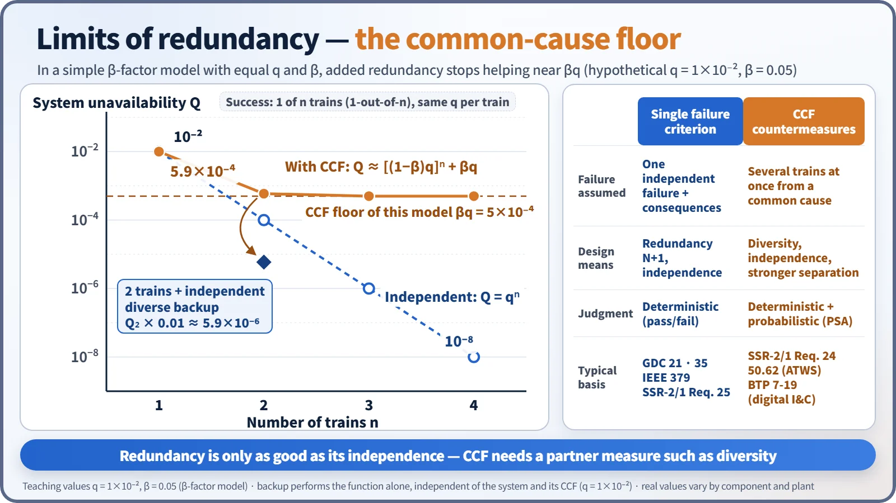
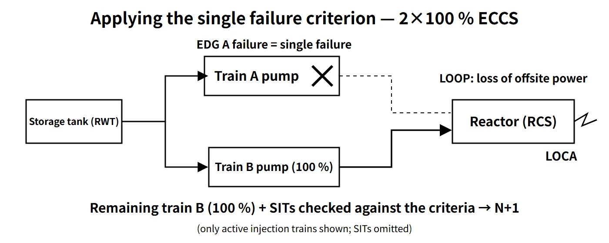

Probabilistic Safety & Reliability · C-PR-002
Single Failure Criterion (SFC) — Keeping the Safety Function Even with the Worst Single Failure Assumed
A safety system must keep its function with any one failure and its knock-on effects assumed, shown on a two-train ECCS and contrasted with common-cause failure.
The single failure criterion is a deterministic design and analysis criterion requiring that a safety system not lose its safety function when any single failure (including the failures it causes) is assumed.
A single failure is "an occurrence which results in the loss of capability of a component to perform its intended safety functions"; several components failing from one occurrence still count as one single failure (10 CFR 50 Appendix A).
Principle and mechanism
What the system must withstand
Section 5.1 of IEEE 603 (single failure criterion) requires a safety system to perform its protective actions even when all of the following are present together:
- Any single detectable failure within the safety system
- All identifiable but non-detectable failures that already exist along with it
- All failures caused by that single failure
- All failures and spurious actions caused by the design basis event that requires the safety function
IEEE 379 sets out how to apply it. US RG 1.53 Rev.2 (2003) endorses IEEE 379-2000; the current edition, IEEE 379-2014, has not yet been endorsed. The criterion originates in the protection-system standard IEEE 279-1971, Section 4.2.
Active and passive failures
| Type | Definition | Examples |
|---|---|---|
| Active failure | A component that depends on mechanical movement or external actuation (power, signals) fails to operate on demand or operates spuriously | Pump fails to start, motor-operated valve fails to open or close, valve opens spuriously |
| Passive failure | Breach of a fluid pressure boundary or mechanical damage to a flow path | Leakage from piping, valve packing or pump seals; flow-path blockage; check valve fails to seat |
Appendix A requires fluid and electric systems to keep their function after a single active failure (passive components working) or a single passive failure (active components working). Electric systems must assume passive failures; for fluid systems a footnote leaves the conditions "under development", and practice follows SECY-77-439 and ANSI/ANS-58.9. In US practice, fluid-system passive failures are assumed mainly in the long-term cooling phase, such as ECCS recirculation, while active failures are assumed in the short-term injection phase. IAEA SSR-2/1 requires passive-component failures to be considered too, excluding them only where it is demonstrated with high confidence that the failure is very unlikely and is not affected by the initiating event. A component that need not change position, such as a locked-open motor-operated valve, can be treated as passive; a check valve may fall in either class depending on the required function and failure mode, so components are not classified by name alone.
Redundancy N+1
If N is the minimum number of trains needed for the safety function, N+1 trains are needed to withstand a single failure. 2×100 % (N = 1) is the most common configuration. To withstand a single failure while one train is out for on-line maintenance, N+2 is needed. Multiple trains mean little if they share support systems such as power, cooling water or HVAC, so electrical and physical separation of the trains (independence) is required as well.
What it means in a plant
Standard assumptions of design-basis accident analysis
FSAR Chapter 15 analyses assume, together:
- An initiating event (e.g. a large LOCA)
- Loss of offsite power (LOOP)
- The one single failure that makes the result worst (worst single failure)
- Conservative initial conditions and models
The initiating event and the damage it directly causes (pipe whip, for example) are event conditions; the single failure is added to the responding system. The worst single failure differs by acceptance criterion: for LOCA peak cladding temperature it is usually the loss of one ECCS train through failure of one emergency diesel generator (EDG), but under the Appendix K minimum containment pressure assumption, all containment heat removal operating can be more limiting. So all candidates are calculated and the most limiting is chosen.
Applying it to a two-train ECCS
The OPR1000 has two high-pressure and two low-pressure safety injection pumps (each 100 %), four safety injection tanks (SITs) and two EDGs. Assuming a large cold-leg LOCA + LOOP + failure of EDG A to start, all train A pumps stop. Analysis then confirms whether the remaining train B (100 %) plus the SITs meets the ECCS acceptance criteria, with injection spilling through the broken loop treated as lost. Remaining 100 % capacity does not by itself prove this; the actual flow versus pressure, time and injection location must be calculated.
The APR1400 has four-train direct vessel injection (DVI). For emergency power, some APR1400 plants have two EDGs, while the US-certified APR1400 design (DC) has four EDG trains, so the number of trains stopped by one EDG failure differs from plant to plant. Train capacity is 50 % of the minimum injection flow for breaks larger than the DVI line and 100 % for smaller breaks. Distinguish the trains lost to the single failure from the trains credited in the analysis: a pump or valve failure loses one train, but the LOCA analysis conservatively credits only the two diagonally opposite trains. A published conference analysis example combines a DVI line break with one EDG failure, leaving one safety injection pump and three SITs.
![Two separated pump rooms, train A shaded with a label saying EDG A fails, power lost, pump stops, and train B labelled 100 % capacity available, beside an assumption chain: initiator plus LOOP (large cold-leg LOCA plus loss of offsite power), worst single failure (EDG A fails to start), consequences (train A power lost, pumps stop, counted as one single failure) and a check of whether train B plus the SITs meet the criteria; a bar chart shows design injection capacity of 200 % with all trains and 100 % after the single failure for an OPR1000-type 2×100 % example and an APR1400-type 4×50 % large-break case, against a required 100 % line](../../assets/images/concepts/c-pr-002-single-failure-criterion/fig1-two-train-eccs-sfc.webp)
In protection systems and operation
The protection system uses four channels with 2-out-of-4 coincidence logic, so it trips despite a single failure and does not trip spuriously on a single false signal. Bypassing one channel changes the logic to 2-out-of-3, preserving single-failure tolerance. The Technical Specifications manage the state in which one train is inoperable — and single-failure tolerance is temporarily lost — through allowed outage times and required actions.
Regulatory and design criteria
The references below are US and international examples of where the criterion is defined and applied.
| Basis | Key point |
|---|---|
| 10 CFR 50 Appendix A | Definition of single failure; single-failure assumption in GDC 17 (electric power), 21 (protection system), 34 (residual heat removal), 35 (ECCS), 38, 44 and others |
| IEEE 603-1991 5.1, IEEE 379-2014, RG 1.53 Rev.2 | Single failure criterion for safety systems and its application |
| SECY-77-439, ANSI/ANS-58.9-2002 | Active and passive failure interpretation; application to fluid systems |
| IAEA SSR-2/1 Rev.1 Requirement 25 | Single failure criterion applied to each safety group; spurious action is a failure mode; passive components may be excluded if justified |
Recent developments
- IAEA requirements moved from NS-R-1 (2000) to SSR-2/1 (2012) and Rev.1 (2016); IEEE 379 was reissued in 2014.
- Design extension conditions (DEC) treat multiple failures beyond the single failure as a separate category, and how far the criterion applies to passive systems and SMRs is under review.
Exemptions and limits
- Only credible failures are assumed, not every conceivable failure. Components with a sufficiently low failure probability, such as the reactor vessel, are not assumed to fail as a single failure (SECY-77-439).
- SBO (by the 10 CFR 50.2 definition, no concurrent single failure or DBA is assumed), ATWS (10 CFR 50.62) and DEC analyses generally do not apply the single failure criterion.
- The single failure criterion deals only with the assumed single failure and its consequential failures and does not consider probabilities. Meeting it therefore does not guarantee tolerance of common-cause failures (CCF), combinations of two or more independent failures, or combinations of human errors. These are covered by diversity and PSA.
Easily confused pairs
| Single failure | Common-cause failure (CCF) | Initiating event | |
|---|---|---|---|
| Definition | One assumed failure + its consequential failures | Several trains fail simultaneously from a common cause (design defect, software, environment, maintenance) | An event that disturbs normal operation and demands safety functions |
| Design response | Redundancy N+1, independence | Diversity, separation, staggered testing and quality | The safety systems themselves (classified as AOO or DBA) |
| In analysis | The worst single one is assumed | Deterministic D3 assessment, PSA models | Starting condition of the analysis |
Redundancy duplicates the same thing against a single failure; diversity adds things working on different principles against CCF. In a β-factor model of a 1-out-of-n system, the independent failure probability keeps falling as qⁿ, but the system unavailability levels off near βq; stronger independence and diverse equipment such as the DPS lower this floor. In the defense-in-depth framework, the single failure criterion is a design criterion within level 3 (design-basis accidents).

Key points at a glance
- Definition: one occurrence that causes loss of a component's safety function (consequential failures included); keeping the safety function when it is assumed = single failure criterion (10 CFR 50 Appendix A).
- Scope: detectable single failure + existing non-detectable failures + consequential failures + failures caused by the DBE (IEEE 603 5.1, IEEE 379).
- Active/passive: active = failure to operate or spurious operation; passive = pressure-boundary or flow-path damage; fluid-system passive failures assumed in the long-term cooling phase.
- Design means: redundancy N+1 (N+2 allowing for maintenance); electrical and physical independence between trains.
- In analysis: initiating event + LOOP + one worst single failure → the remaining trains meet the acceptance criteria.
- Example: 2×100 % ECCS; LOCA + LOOP + EDG A failure → train B at 100 %.
- Exemptions and limits: credible failures only; passive components excluded if justified; not applied to SBO, ATWS or DEC; CCF not covered → diversity and PSA.
- Basis (examples): GDC 17, 21 and 35; IEEE 603 5.1 and IEEE 379; SSR-2/1 Requirement 25.
- Keep apart: the initiating event (e.g. the LOCA) is an assumed condition, while the single failure is added to the responding system; meeting the criterion does not cover CCF.
